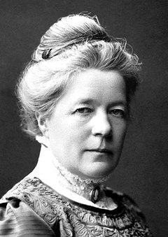

Selma Lagerlöf
Selma Lagerlöf föddes 1858 på herrgården Mårbacka som femte barnet av sex till löjtnant Erik Gustaf Lagerlöf (1819–1885) och Elisabet Lovisa Wallroth (1827–1915). Hennes farfar, Daniel Lagerlöf (1776–1852) var kusin till Esaias Tegnér och hennes farmor, Elisabet Maria Wennervik (1784–1864) var dotter till en komminister. Selma Lagerlöf var även släkt med Erik Gustaf Geijer. Hon föddes med en höftskada som orsakades av att ledkulan i höften saknade ordentligt fäste.
När Lagerlöf var tre och ett halvt år gammal, sommaren 1862, blev hon sjuk och helt förlamad i båda benen. Detta försvann lika plötsligt som det hade kommit, men hon hade under sin barndom inte lika lätt att leka som andra barn.
År 1891 debuterade Lagerlöf med romanen Gösta Berlings saga efter att ha vunnit en pristävling i tidningen Idun. Lagerlöf färdigställde boken med hjälp av ett stipendium som ordnats av Sophie Adlersparre, grundare av Fredrika-Bremer-Förbundet. Gösta Berlings saga är en av svensk litteraturs största klassiker – en rik och fantastisk skröna om kavaljererna och livet i Värmland på 1800-talet. Den bröt mot dåvarande stilideal som förespråkade realistisk saklighet. Boken fick ett blandat mottagande av kritikerkåren.
1895 lämnade Lagerlöf sin lärarinnetjänst. Från den tiden försörjde hon sig helt på sitt författarskap, och 1897 flyttade hon med sin faster till Falun för att vara närmare sin syster Gerda.
Lagerlöf gjorde tillsammans med Sophie Elkan flera längre resor i Europa och år 1899–1900 en längre resa till Mellanöstern. Väl hemkommen skrev hon romanen Jerusalem som blev hennes stora internationella genombrott.
Lagerlöfs internationellt mest kända bok är Nils Holgerssons underbara resa genom Sverige, som ursprungligen var tänkt som en läsebok för folkskolan. I den får vi uppleva Sverige genom en fjortonårig pojke (Nils Holgersson) som flyger på en gåsrygg över landet.